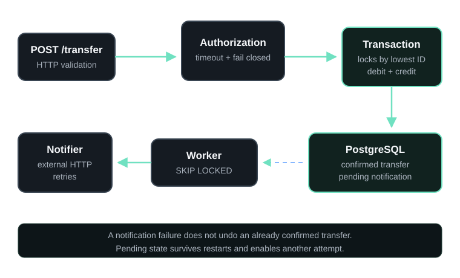

Project 01
Wallet API
Java 21 · Spring Boot · PostgreSQL · Docker
Challenge completed ·
REST API for wallet transfers, built to preserve monetary invariants under concurrency and external-service failures.
Technical decisions
- A single transaction covers debit, credit, and creation of the pending notification.
- Deterministically ordered pessimistic locks prevent double spending and reduce deadlock risk.
- Durable notification retries use
FOR UPDATE SKIP LOCKED.
Evidence
- 49 tests: 28 integration, 14 HTTP client, and 7 domain tests.
- Real PostgreSQL instances through Testcontainers.
- Rollback, concurrency, timeout, and outage scenarios.
